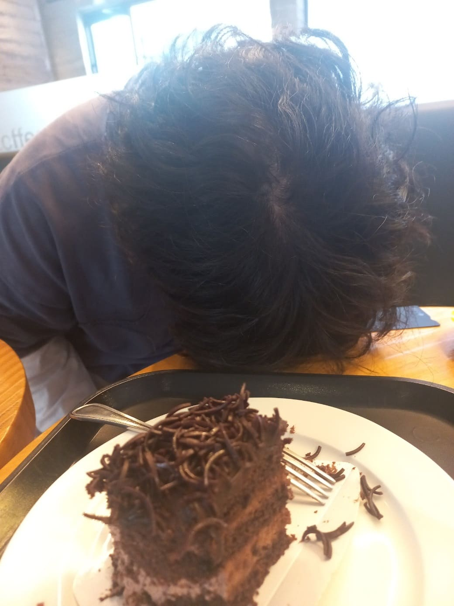
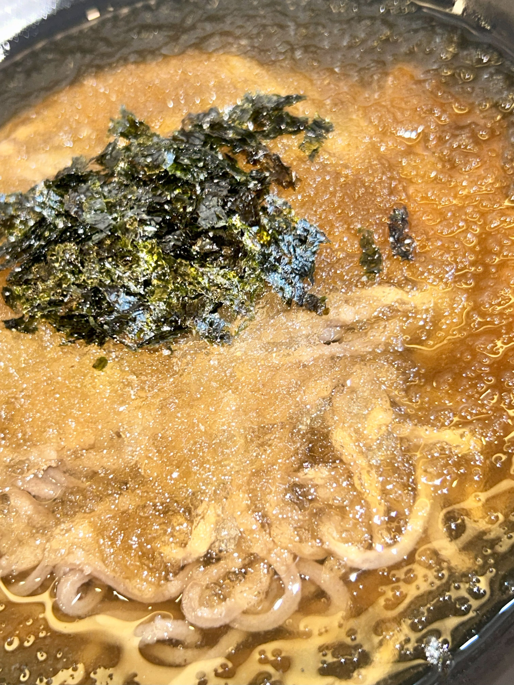
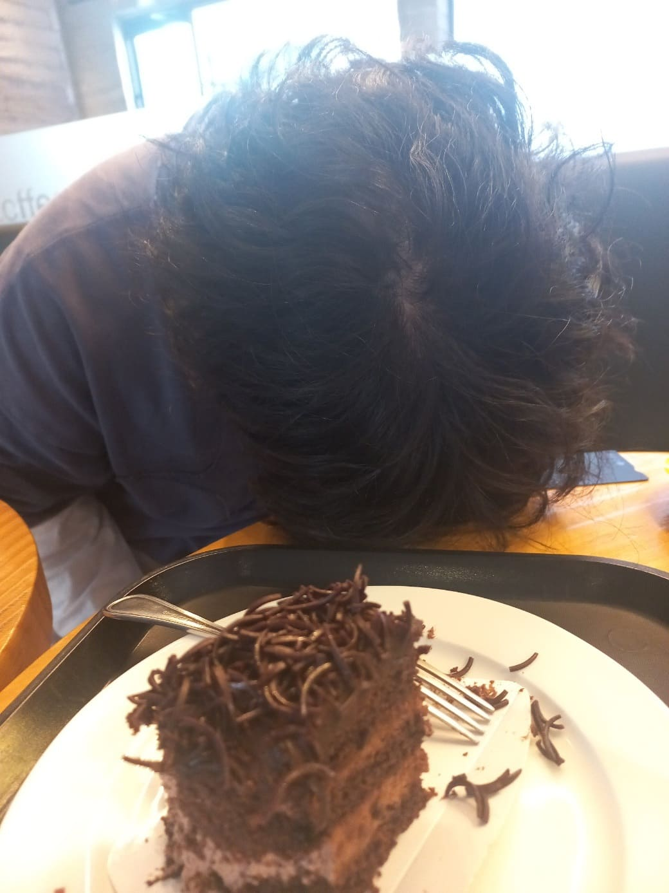
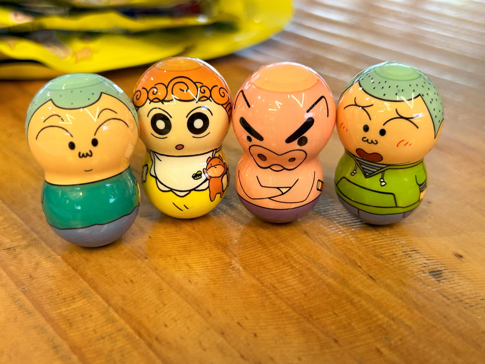
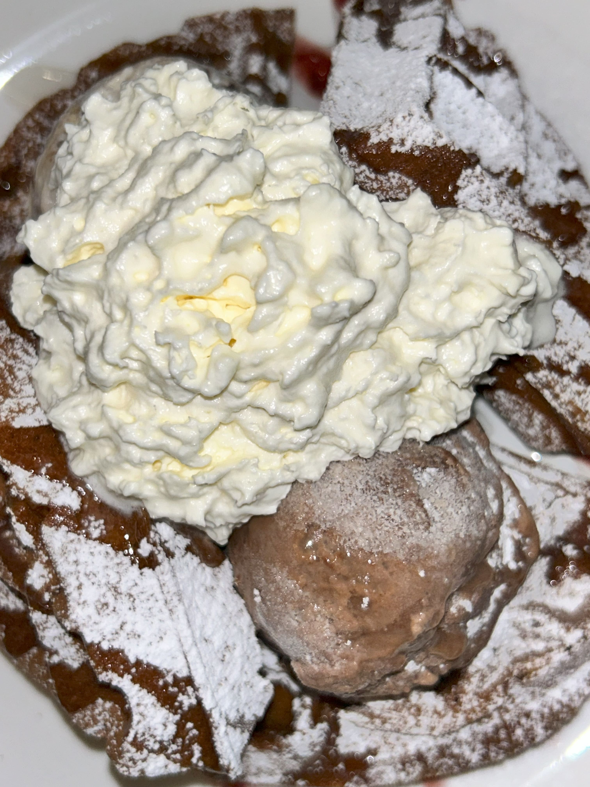

낮에 뒤지게 복사해서 블로그 되살렸으요 ㅎ
정말...점말 만은일이잇엇워...
근데 잇잔아요

이거 말인데여
진짜 내 머리 같아여?
대답 좀 해 보세요

ㅔ?
안녕하시소
김효진이라예
다름이 아니고
만났습니다
누구를?
수빈시를.
렛츠고!
가볍게 불어터진 냉모밀로 시작합니다

이래도 되는겨? 백종원 씨 내려와 봐유
본인 식당부터 기강 잡아야 되는 거 아녀?
그래도 돈 없으니까 참고 먹심다 ㅎ
다음에는 안 올 것이여
어제 간 곳 갈 것이여
밥 먹었으니께 카공 때리야죠
낮에 뒤지게 복사해서 블로그 되살렸으요 ㅎ
정말...점말 만은일이잇엇워...
근데 잇잔아요
이거 말인데여
진짜 내 머리 같아여?
대답 좀 해 보세요

ㅔ?
ㅇㅊㅊ,,,
아차차라는 뜻
수빈시의 후원이 잇엇어요
바로바로
뭐엿더라
암튼 귀염둥이들
소개합니다~

ㅔ 맞아요 저희 깡중독이에요
재미있는데 어떡해 ㅋㅋ
재미있지를 말든가 ㅋㅋ
그때 갑자기 돌발행동을 보이는 녀석!
무슨 바람이 분 걸까~?
따라가 보는 제작진!
아이고야, 플렉스한 수빈이었다~!

근데 진짜 교통사고 난 것 같나요?
난 정성스레 찍은 건뎀...
ㅠ
오늘도 빠질 수 없겠죠? 카공 하다 지칠 땐 모다?
우 정 노 트 ㅋㅋ
이러려고 산 게 아닌디...
아무튼 잘 놀고 잇는 듯? ㅋㅋ
다 씀 ㄱ-
이제 카공 끝나면 뭐 하지...
수빈시의 멋쟝이 그림으로 마 무 리

역시 최고였으! ★★★★★★★★★★